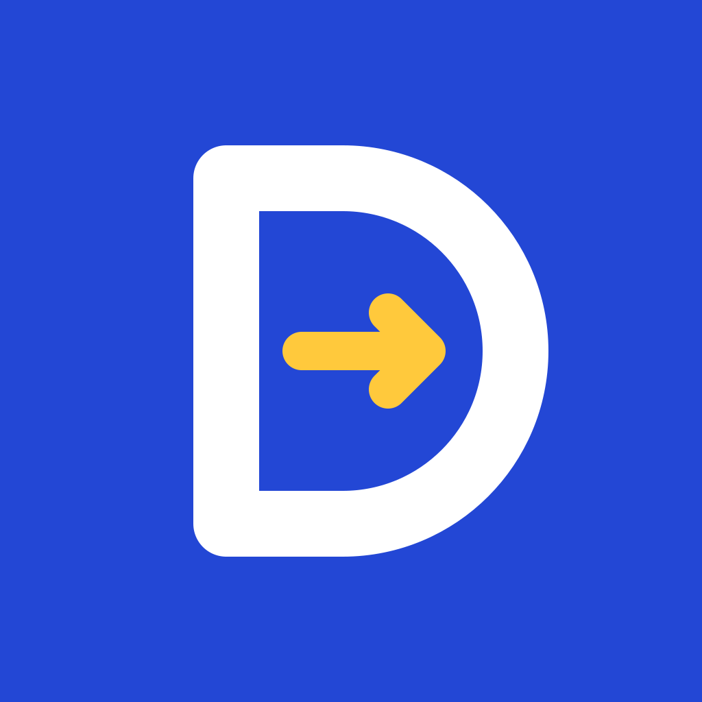

Projects, research, and experience, with a focus on machine learning and control for robotics.
MIT UROP: physics-informed neural networks and a digital twin for fish growth, plus object detection and a GUI for shellfish larvae.
Co-authored paper: a Random Forest on a 10-channel AS7341 sensor cut color detection error by about 87% versus cosine similarity under varying light.

Full-stack app that matches students with tutors, built with React, Node.js, PostgreSQL, Stripe, and AWS SES.
Published Manifest V3 Chrome extension that adds a hotkey for continuous, low-latency rewind.